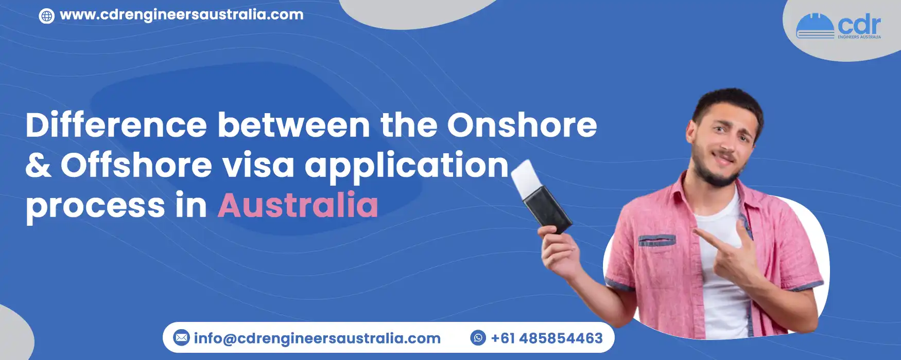

Difference between the Onshore and Offshore visa application process in Australia
A visa for Australia can be applied for either inside or outside of the country. An offshore visa is requested from a location not in Australia while an onshore visa is applied for while in Australia.
What is an Offshore Visa?
The Partner Visa in Australia is an offshore visa. This visa is designed to allow foreign partners of Australian citizens, permanent residents, or eligible New Zealand citizens who are living overseas to come to Australia and be granted permanent residency. This visa allows the partner to remain in Australia permanently and access several benefits such as working and studying in Australia as well as access to Medicare, social security benefits, and other entitlements provided by the Australian government.
The visa applicant must prove that they are in a committed, exclusive relationship with their partner who is either an Australian citizen, permanent resident, or eligible New Zealand citizen at the time of application. The visa applicant must also meet a range of health and character requirements to prove that they are suitable for Australian immigration. For your help, we at CDR Engineers Australia are here to help advance your professional career in Australia.
Types of Offshore Visa
1. Partner (Provisional) visa (subclass 309)
This is a temporary visa granted to spouses and de facto partners who are outside Australia when the sponsor is an Australian citizen, permanent resident, or eligible New Zealand citizen. The applicant must have been in a committed relationship with their sponsor for at least 12 months prior to applying. Once granted, this visa allows the applicant and their family members to live in Australia until a decision is made on a permanent Partner visa application.
2. Partner (Migrant) visa (subclass 100)
This is a permanent visa available to married partners and de facto partners of Australians and eligible New Zealand citizens who are living both inside and outside of Australia. In order to be eligible for this visa, the applicant must have been in a genuine and continuing relationship with their sponsor for at least 12 months prior to applying. Upon grant of this visa, the applicant and their family may live, work and study in Australia permanently.
What is an Onshore Visa?
An Onshore Partner Visa allows those who are married, engaged, or in a de facto relationship with an Australian citizen, permanent resident, or eligible New Zealand citizen to live and work in Australia. Under this visa, your partner will be able to sponsor you for a temporary or permanent visa. This visa allows you to stay in Australia until a decision is made on your application. You can also apply for a permanent visa if you meet the criteria. You can contact us for a free consultation on this.
What Are The Types of Onshore Visas?
The Onshore Partner Visa (subclass 820/801) is a permanent Australian visa that allows the partner of an eligible sponsor who holds or is a citizen of Australia to travel to and live in Australia. This visa can be used by applicants outside of Australia or within Australia, depending on their circumstances. The Onshore Partner Visa consists of two stages. The first stage, the Temporary Partner Visa (subclass 820), lets the applicant live in Australia for two years. After this period has ended, the applicant can then apply for the Permanent Partner Visa (subclass 801).
Both stages require the same application process, but it is important to note that if you are applying from outside Australia, you will need to provide additional documents such as a valid passport. The Onshore Partner Visa provides several benefits. These include the right to work and study in Australia, access to medical benefits through Medicare, and family reunion rights. It also provides the holder with eligibility for Australian citizenship after a certain period.
Process For Offshore and Onshore Visa
The process for obtaining an onshore or offshore partner visa in Australia is quite complex and requires a lot of preparation.
First, the intending migrant must make sure that they meet the eligibility criteria for the visa. This includes proving the existence of a genuine and ongoing relationship with their Australian partner, as well as meeting all of the other requirements such as financial status, health, and character.
Once the eligibility criteria are met, the intended migrant can then lodge a partner visa application either onshore (in Australia) or offshore (outside Australia).
For offshore applications, the applicant must be outside of Australia when the application is made and will remain out of Australia during the entire processing period. We offer various services regarding these applications.
For onshore applications, the applicant must be already in Australia when the application is made and remain in Australia throughout the processing period. The applicant will then need to provide supporting documents that prove their identity, relationship, and other criteria for the visa. This includes evidence such as birth certificates, marriage records, and even emails and pictures of the couple’s relationship. They may also need to provide documents such as bank statements and health assessments. Once the applicant has provided all of the necessary documentation, the Australian government will assess their application and make a decision.
If approved, the applicant will then be granted the visa and allowed to enter or remain in Australia with their partner. It is important to note that there are several specific rules and regulations that must be followed during this process, including the requirement to apply for permanent residence within two years of being granted the visa.
Conclusion
At CDR Engineers Australia , we are dedicated to helping you through the visa application process, both onshore and offshore. We have taken the time to analyze each application type, offering advice so that all your applications can be successful. Our team of experienced professionals has created a Step-by-Step Guide which simplifies the process of applying for a visa, making it more efficient and effective for a Skilled migration to Australia. This guide covers all types of visas, including regional provisional visas, tourist visas, temporary activity visas, and more. We are confident that our solutions will enable you to get the best possible outcome when applying for your visa. Thank you for choosing us as your service provider.